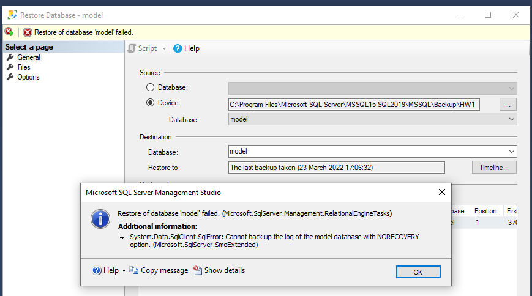

Predao sam zadaću, ali ne mogu mi ocijenit jer ne uspijevaju restorati bazu. Ja kod sebe normalno restoram i sve radi a oni dobiju ovu grešku. Zna li netko u čemu je problem jer oni očito ne znaju i samo mi kažu da to riješim jer će mi to bit problem na ostalim zadaćama?
